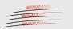

← Natrag na sezonu 2026./2027.
solist(ica)
Na vko.hr ovaj solist naveden je samo inicijalom (bez potpunog imena i biografije). Portret nije prikazan jer nema pouzdane fotografije.
Izvor: vko.hr
← Natrag